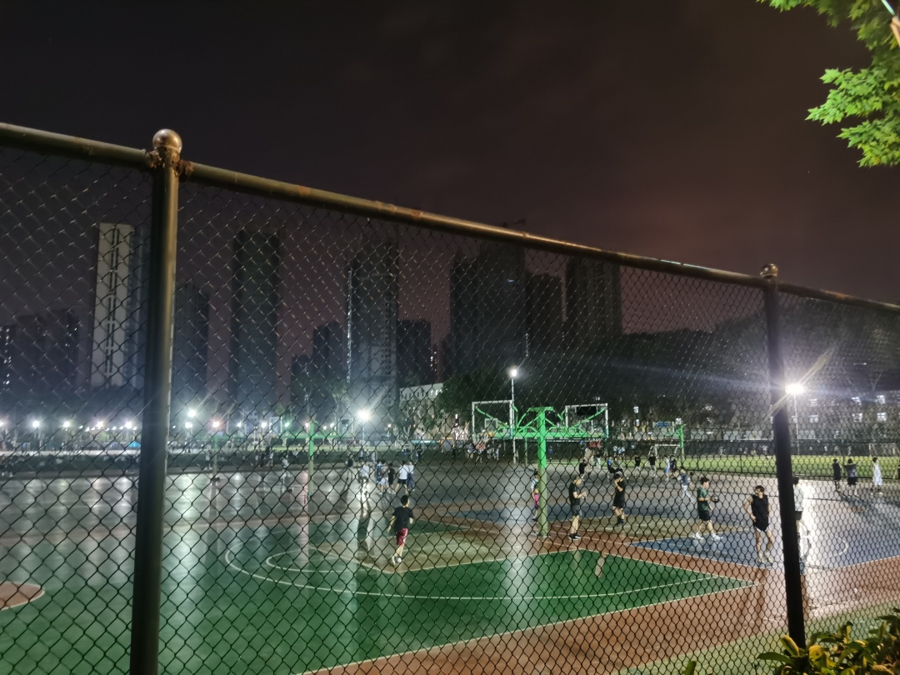
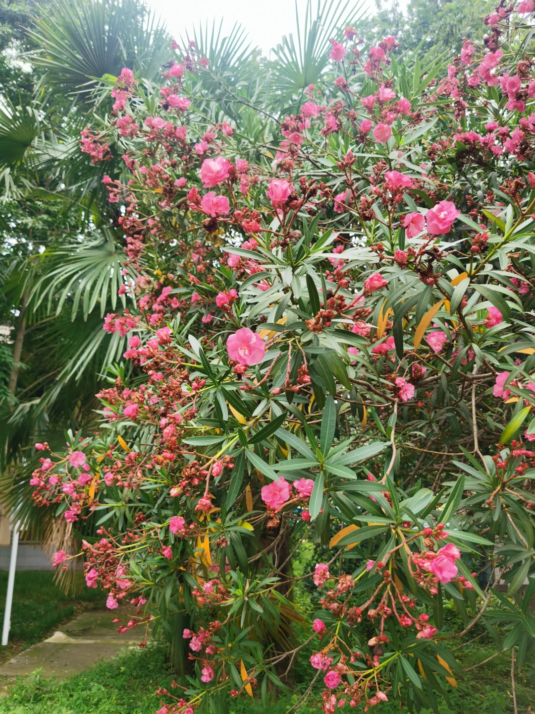
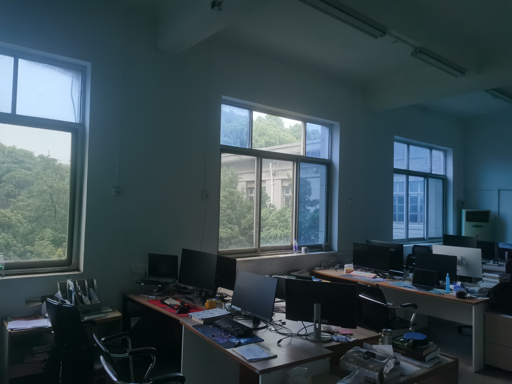

前言
周五的晚上，西操的操场有些风，在即将离开之时，听到了我最喜欢的一首歌，《我用什么把你留住》。是两位女生唱的，低沉和略带沙哑的声音很好听，于是我走近，静静坐下。

这周的发生的事还挺多，最让我欣喜的一件事便是有了表达亦或是写些什么的欲望。回到宿舍，吃完西瓜，便打开电脑用键盘慢慢输入。以前的话，也不是没有思绪，但总就是静不下来，或者说是没有耐心写。昨天卸载了我手机的很多app，什么虎扑，max，闲鱼，等等等等，感觉留着是真的好像也没啥用，于是今天，我短暂地感受到了时间变得更多，也希望之后能一直有这样的感受。
会以物喜，会以己悲
前几天，忽然觉得很悲伤，感觉处境好像很困难，每当我陷入这样的情绪中的时候，我总会想起“不以物喜，不以己悲”，但我觉得在我身上应该是“会以物喜，会以己悲”。思想实在是达不到那样的高度，面对眼前的困难，在无法逃避的时候，身心所给出的第一反应也是情绪受到影响。换做以往，我肯定会绷着最后的那条底线，与这种困难，与这种情绪僵持着直到它慢慢消失。而这一次，我直接摆大烂，直接被情绪和困难支配，经历了短暂的崩溃，虽然说也没流出几滴眼泪，好在有五三一直在鼓励。不破不立，摆大烂之后，换来的是极度的平静以及非凡的勇气，也许只有持续地拥有这种平静和勇气，才能真的不因外物的好坏而让自己或喜或悲吧。
知行合一
昨天晚上在淋浴间，水流击打在我的身上，而我脑海里突然想起了“知行合一”，也就是在那次“会以物喜，会以己悲”之后。虽然对于“知行合一”的概念，我很早就知道，或者说是听说过，但我仿佛从未仔细思索。王阳明的知行合一，是指道德认识和道德践履的一体化，很显然我理解的知行合一与他倡导的是两码事。水流击打在我身上，我脑海中溅出的想法是知识和行动的统一，又或是，认知和行动的统一。这两者确是密不可分，认知指导行动，行动反哺认知。以拖延症为例，我知道我要干什么，但我就是不想干，那我到底是想干还是不想干呢，我拖着不干就是我不想干这种认知的指导，但我本意是要干的，而这种要干的认知并没有作用于上风，所以在这种时候我需要调整认知。需要将立马做，立刻做的这种认知调整到所有认知的最前头，用正确的认知来指导正确的行动。像上面说的，行动也在反哺认知，不管是好的行动还是不好的行动，拖延这种行动是不好的，但它让我认识到我认知的不正确，它便反作用于认知。总之，我还是很希望我在以后的生活中能够做到这种知行合一，做对的事情，便好。

和母亲的对话
今天傍晚待实验室的同学都走了时，我打了通视频电话给妈妈，聊了聊未来，聊了聊压力。特别是聊到未来时，我说真正的啃老不是待在家里坐吃山空，而是掏空父母的口袋在大城市买个房，她笑了笑，自责没能力给我太多。于是我开始安慰，我由衷觉得我从小到大都很快乐，至于以后，还是得靠自己的能力，当能力小于欲望时，只得落入庸人自扰的困境，看清自己的能力，调整自己的欲望。接着又说到烦恼和操心，每个人吧，都有自己的烦恼和自己的操心。我操心着学业和手头的活，母亲操心着不能给我更多支持，旁人操心着他们操心的事。尽管有或多或少的烦恼，但还是得向前看，得用好的一面来鼓励和麻痹自己，路总是有的，总是有人在走的。

最后
写了这么些，我是有一点子开心的，虽然文笔不行但不至于无话可说。从小到大，偶尔会提笔写点什么，高中时候总喜欢给身边的同学看，比较天天在一起，他们不看的话就逼着他们看。大学后更多的是给自己看，不管什么形式，总觉得文字带着一些温度。村上春树说“回忆会从内侧温暖你的身体，也会从内侧剧烈地切割你”，而自己写的文字，仿佛只有前者而没有后者，真的很不错。
如果这些有幸被你看到，我希望你过得快乐开心，哪怕不是永远。
《我用什么把你留住》已经唱完，我再给你点一首《经济舱》CafeHu & Key L (Live)
水云身给你的推送
如果您喜欢此博客或发现它对您有用，则欢迎对此发表评论。 也欢迎您共享此博客，以便更多人可以参与。 如果博客中使用的图像侵犯了您的版权，请与作者联系以将其删除。 谢谢 ！